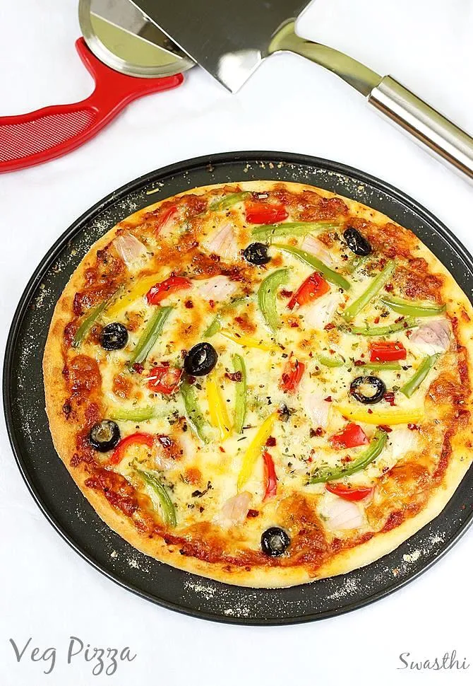

Homemade Pizza

Description
Say goodbye to boring frozen pizzas — this homemade pizza recipe brings fresh, cheesy, gooey goodness straight to your kitchen! With a soft, fluffy crust, tangy homemade sauce, and your favorite toppings, every bite is a burst of flavor. Whether you’re baking it in an oven or cooking on a tawa, this recipe makes pizza night a total win without needing any fancy tools. Perfect for movie marathons, weekend hangs, or when you just wanna treat yourself to a slice of pure happiness 🤤🫶
Ingredients
- For the dough:
- 1 cup all-purpose flour
- 1 tsp instant yeast
- ½ tsp sugar
- ½ tsp salt
- 2 tbsp oil
- ~½ cup warm water
- For the sauce:
- 2 tbsp tomato ketchup or ½ cup tomato puree
- 1 tsp chili flakes
- 1 tsp oregano or Italian seasoning
- 1 minced garlic clove (optional)
- For the toppings:
- ½ cup shredded mozzarella
- Chopped veggies of your choice (capsicum, onion, tomato, mushroom, corn)
- Optional: olives, jalapeños, paneer, or cooked chicken
Steps
- Make the Dough
- Mix flour, yeast, sugar, and salt in a bowl.
- Add warm water little by little while kneading into a soft dough.
- Add oil, knead for 5 minutes until smooth, cover, and let it rise for 1 hour.
- Make the Sauce
- Mix ketchup/puree with chili flakes, oregano, and minced garlic.
- Assemble the Pizza
- Once the dough has risen, punch it down and roll it out on a floured surface.
- Transfer to a greased pan/tawa/oven tray.
- Spread your sauce evenly, add cheese, then pile on your toppings.
- Cook It
- Oven: Bake at 200°C (400°F) for 12-15 minutes until crust is golden and cheese is melted.
- Pan/tawa: Heat tawa on low, place pizza on it, cover with lid, cook 15-20 minutes until bottom is crisp and cheese melts.
- Cool and Serve
- Let it rest for a minute, slice it up, sprinkle extra oregano and chili flakes, and enjoy!
Home Page